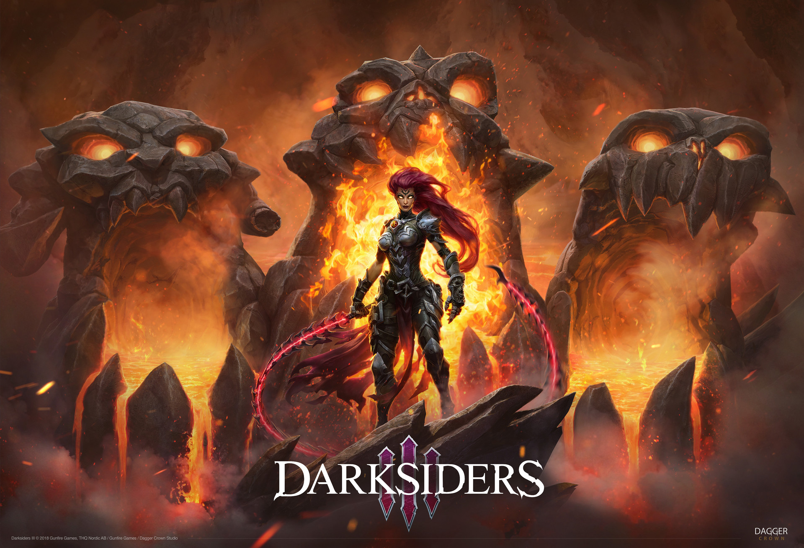
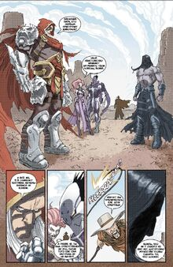
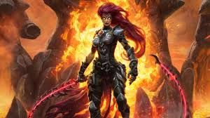

Путешествие Ярости
by Rob Smith
Posted on may 11.05.2020 at 9;34

Ярость и Раздор - Всадники, о которых на данный момент известно меньше всего, поскольку в Darksiders и Darksiders II они упоминаются лишь мимоходом, а в графических новеллах и романе Ари Мармелла являются персонажами второго, а то и третьего плана. Тем не менее, кое-какую информацию о них найти возможно.Как и ее трое братьев, Ярость когда-то была воином армии Нефилимов, возглавляемой Авессаломом. Как и они, однажды она раскаялась в совершенных грехах и разочаровалась в своих идеалах, что и заставило ее отправиться в чертог Обугленного Совета. Вместе с остальными тремя она присягнула в верности Совету, отреклась от своего прошлого, выбрав себе имя "Ярость", и стала Всадником Апокалипсиса. По словам ее старшего брата Смерти, с тех пор она целиком и полностью верна Обугленному Совету. Ярость была единственным Всадником, который открыто выразил радость по поводу возвращения Смерти из 500-летней отлучки после Эдемской битвы. Когда начался кризис, вызванный "Великими Мерзостями", и Смерть, отчитываясь перед Советом, отказался назвать координаты Хранилища, за что ему грозило наказание, она пыталась убедить его пойти на уступки, движимая желанием его защитить 
Когда выяснилось, что Смерть, вопреки приказу Обугленного Совета, не собирается вовлекать в свою миссию никого из своих братьев, Ярость, вместе с Войной и Раздором, выразила протест по данному поводу. Поскольку Смерть остался непоколебим и отправился на задание без них, Война предложил оставшемуся брату и сестре последовать за ним. Ярость едва не согласилась на этот саботаж, но, в итоге, отказалась, мотивируя свое решение тем, что остальные Всадники должны уважать волю своего старшего брата. Раздор также отказался, но по другой причине. Позже, когда ангел Хадримон, вооруженный "Черным Милосердием" отправился в одну из ангельских застав, - "Серебряную Стену" (Silver Wall) - чтобы проверить, работает ли новый источник крови Ревайм (Ravaiim), Ярость была послана туда Обугленным Советом, чтобы уничтожить конструктов, вторгнувшихся туда вместе с обезумевшим ангелом. Read more